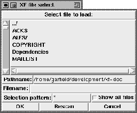

Calling this procedure pops up a standard file selector box (described in the templates section under FSBox). Here, the user can select a Tcl/Tk file that will be loaded into the currently edited application. Before the code is loaded, the currently edited application is deleted form the interpreter. The loaded code should be careful with changes to the autoload path. If the autoload path is redefined, it is important that the XF source directory (xfPath(src)) is part of the new autoload path. This procedure gets no parameters.

Figure: The procedure XFProcFileLoad